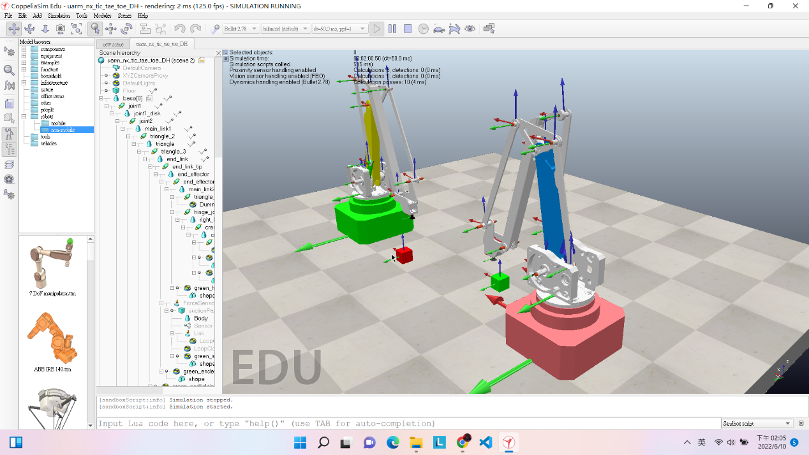

w15 <<
Previous Next >> Tic-Tae-Toe
w16
Online Exam
Onedrive檔案:Online Exam

1.已知左側綠色底座的 uArm 機械手臂, 其基座座標原點位於絕對座標 (1.0, 0.25, 0), 啟動模擬後 green_suctionpad_frame 座標原點則位於 (0.22859, 0.26047, 0.36576), 請列出運算式說明, 啟動模擬後 joint1, joint2 與 joint3 分別以逆時針旋轉 5 度後, 求 green_suctionpad_frame 的絕對座標值.
分別利用程式控制joint1、2和3個逆時針轉5度後，點擊 green_suctionpad_frame 零件查看它的座標值(x:+0.4888 y:+0.3053 z:+0.2593)
可查看上述連結之檔案 w16 bg3 online exam 1.pdf 檔案
程式碼圖片:

2.已知左側 uarm 前方的紅色方塊頂端中心座標值為 (0.2, 0.4, 0.1), 請列出運算式說明左側 uarm 機械手臂的 joint1, joint2 與 joint3 該如何旋轉才能讓 end effector 的吸盤末端中心點移動至紅色方塊頂端中心?
先算出 joint1 需要轉動多少度才可再綠色底座的 uArm 機械手臂與紅色方塊構成的直線上。
可利用三角形的餘弦定理公式，從上視將綠色底座、紅色方塊、吸盤這三點構成一個三角形。然後利用點到點算出a、b、c 再使用公式可求出角度，而後再更改程式中轉一次的值，可以對到綠色底座的 uArm 機械
手臂與紅色方塊構成的直線上。
但吸盤還未到達紅色方塊頂端中心，目前尚在想方法完成。但有試著利用手動 的方式將吸盤到達紅色方塊頂端中心。
可查看上述連結之檔案 w16 bg3 online exam 2.pdf 檔案
w15 <<
Previous Next >> Tic-Tae-Toe